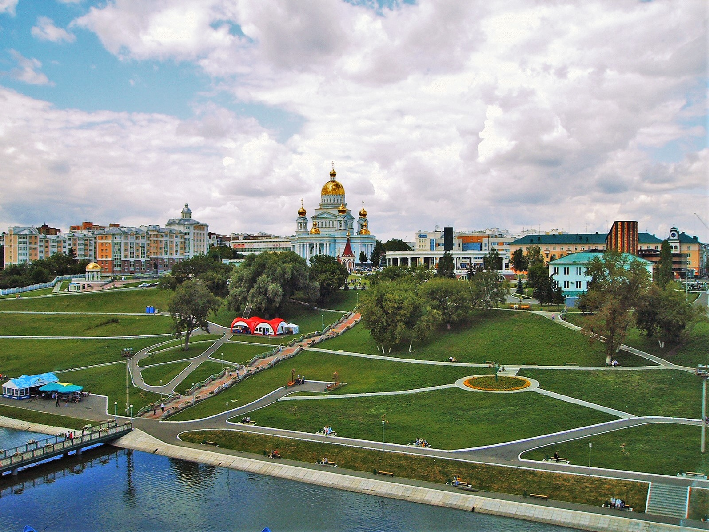
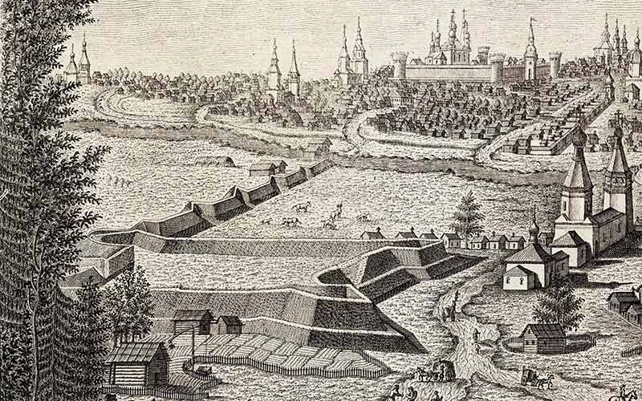
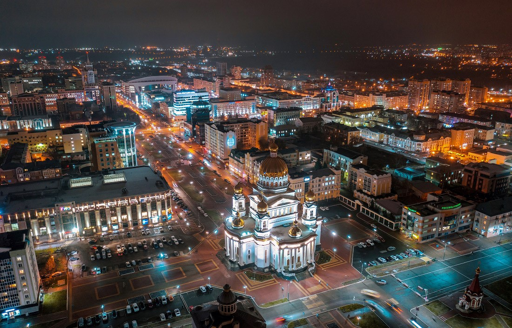

Памятники Мордовии
Откройте для себя уникальные памятники, богатую историю и культурное наследие, которые олицетворяют дух этого прекрасного города. Прогуляйтесь по улицам Саранска, узнавайте его сокровища и погружайтесь в атмосферу увлекательного путешествия через века.
Приключение в истории
Исследуйте памятники архитектуры, скульптуры и истории, которые расскажут вам удивительные истории прошлого и соприкоснитесь с наследием предков.
Окунитесь в культурное наследие
Почувствуйте атмосферу местных обычаев и традиций, ощутите дух города в каждой скульптуре и архитектурном шедевре.